<!DOCTYPE html>
<html lang="en">
  <head>
    <meta charset="utf-8" />
    <meta name="viewport" content="width=device-width, initial-scale=1.0, maximum-scale=1.0, user-scalable=no" />

    <title></title>
    <link rel="stylesheet" href="dist/reveal.css" />
    <link rel="stylesheet" href="dist/theme/iph.css" id="theme" />
    <link rel="stylesheet" href="plugin/highlight/spyder.css" />
	<link rel="stylesheet" href="css/layout.css" />
	<link rel="stylesheet" href="plugin/customcontrols/style.css">


    <script defer src="dist/fontawesome/all.min.js"></script>

	<script type="text/javascript">
		var forgetPop = true;
		function onPopState(event) {
			if(forgetPop){
				forgetPop = false;
			} else {
				parent.postMessage(event.target.location.href, "app://obsidian.md");
			}
        }
		window.onpopstate = onPopState;
		window.onmessage = event => {
			if(event.data == "reload"){
				window.document.location.reload();
			}
			forgetPop = true;
		}

		function fitElements(){
			const itemsToFit = document.getElementsByClassName('fitText');
			for (const item in itemsToFit) {
				if (Object.hasOwnProperty.call(itemsToFit, item)) {
					var element = itemsToFit[item];
					fitElement(element,1, 1000);
					element.classList.remove('fitText');
				}
			}
		}

		function fitElement(element, start, end){

			let size = (end + start) / 2;
			element.style.fontSize = `${size}px`;

			if(Math.abs(start - end) < 1){
				while(element.scrollHeight > element.offsetHeight){
					size--;
					element.style.fontSize = `${size}px`;
				}
				return;
			}

			if(element.scrollHeight > element.offsetHeight){
				fitElement(element, start, size);
			} else {
				fitElement(element, size, end);
			}		
		}


		document.onreadystatechange = () => {
			fitElements();
			if (document.readyState === 'complete') {
				if (window.location.href.indexOf("?export") != -1){
					parent.postMessage(event.target.location.href, "app://obsidian.md");
				}
				if (window.location.href.indexOf("print-pdf") != -1){
					let stateCheck = setInterval(() => {
						clearInterval(stateCheck);
						window.print();
					}, 250);
				}
			}
	};


        </script>
  </head>
  <body>
    <div class="reveal">
      <div class="slides"><section  data-markdown><script type="text/template"><!-- .slide: class="has-light-background drop" data-background-color="#f8f8f8" -->
<div class="" style="position: absolute; left: 0px; top: 0px; height: 700px; width: 960px; min-height: 700px; display: flex; flex-direction: column; align-items: center; justify-content: center" absolute="true">

### Estructuras de Datos y Algoritmos

#### *Estructuras de Datos Lineales I*

[Eduardo Rosales](mailto:ee.rosales24@uniandes.edu.co)

Departamento de Ingeniería de Sistemas y Computación

Universidad de los Andes
</div></script></section><section  data-markdown><script type="text/template"><!-- .slide: class="has-light-background drop" data-background-color="#f8f8f8" -->
<div class="" style="position: absolute; left: 0px; top: 0px; height: 700px; width: 960px; min-height: 700px; display: flex; flex-direction: column; align-items: center; justify-content: center" absolute="true">

### Estructura de datos lineal (1/2)

- Secuencia de elementos ordenados uno tras otro
- Acceso secuencial: 
	- Lectura elemento por elemento
- Operaciones elementales: 
	- Acceso, inserción, eliminación
</div></script></section><section  data-markdown><script type="text/template"><!-- .slide: class="has-light-background drop" data-background-color="#f8f8f8" -->
<div class="" style="position: absolute; left: 0px; top: 0px; height: 700px; width: 960px; min-height: 700px; display: flex; flex-direction: column; align-items: center; justify-content: center" absolute="true">

### Estructura de datos lineal (2/2)


- Almacenamiento
	- 2 estrategias principales:
		- Memoria contigua o 
		- Mediante referencias

- Ej: 
	- Arreglo (_Array List_)
	- Lista  enlazada simple (_Single Linked List_)
</div></script></section><section  data-markdown><script type="text/template"><!-- .slide: class="has-light-background drop" data-background-color="#f8f8f8" -->
<div class="" style="position: absolute; left: 0px; top: 0px; height: 700px; width: 960px; min-height: 700px; display: flex; flex-direction: column; align-items: center; justify-content: center" absolute="true">

### Lista en Python (1/2)

- Secuencia mutable
	- **Secuencia**
		- Iterable indexado (acceso por índice a un elemento dado) 
			- Indexación desde cero
		- Retorna su tamaño
		- Ejemplos de secuencias de uso común en Python: 
			- Strings, listas, tuplas
- Soporta elementos de diferentes tipos
	- Incluyendo otras listas
</div></script></section><section  data-markdown><script type="text/template"><!-- .slide: class="has-light-background drop" data-background-color="#f8f8f8" -->
<div class="" style="position: absolute; left: 0px; top: 0px; height: 700px; width: 960px; min-height: 700px; display: flex; flex-direction: column; align-items: center; justify-content: center" absolute="true">

### Lista en Python (2/2)

- Estructura mutable
	- Soporta modificaciones después de su creación 
		- Añadir, eliminar y actualizar elementos
- Permite elementos duplicados
- Puede estar vacía
- Ej:
```python
[-2, -1, 0, 1, 2]  # Esta es una lista de enteros
[]  # Esta es una lista vacía
```
</div></script></section><section  data-markdown><script type="text/template"><!-- .slide: class="has-light-background drop" data-background-color="#f8f8f8" -->
<div class="" style="position: absolute; left: 0px; top: 0px; height: 700px; width: 960px; min-height: 700px; display: flex; flex-direction: column; align-items: center; justify-content: center" absolute="true">

### Bit

- Unidad básica de información
	- Representa un `0` o un `1`
</div></script></section><section  data-markdown><script type="text/template"><!-- .slide: class="has-light-background drop" data-background-color="#f8f8f8" -->
<div class="" style="position: absolute; left: 0px; top: 0px; height: 700px; width: 960px; min-height: 700px; display: flex; flex-direction: column; align-items: center; justify-content: center" absolute="true">

### Byte

- Agrupación de (típicamente) 8 bits
- Cada byte tiene una dirección de memoria única

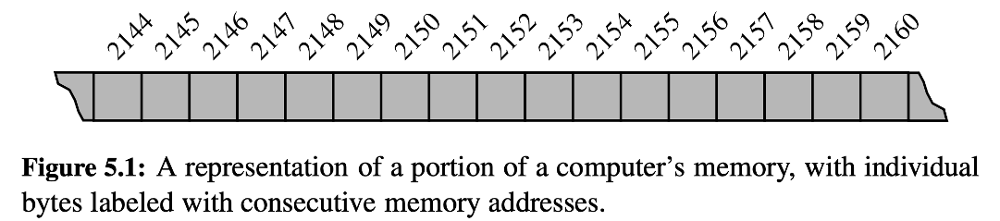
</div></script></section><section  data-markdown><script type="text/template"><!-- .slide: class="has-light-background drop" data-background-color="#f8f8f8" -->
<div class="" style="position: absolute; left: 0px; top: 0px; height: 700px; width: 960px; min-height: 700px; display: flex; flex-direction: column; align-items: center; justify-content: center" absolute="true">

### Arreglo (1/2)

- Estructura de datos 
- Almacena elementos secuenciales en memoria contigua

- Ej:
	- Un string 
		-  Secuencia de caracteres
</div></script></section><section  data-markdown><script type="text/template"><!-- .slide: class="has-light-background drop" data-background-color="#f8f8f8" -->
<div class="" style="position: absolute; left: 0px; top: 0px; height: 700px; width: 960px; min-height: 700px; display: flex; flex-direction: column; align-items: center; justify-content: center" absolute="true">

### Arreglo (2/2)


	

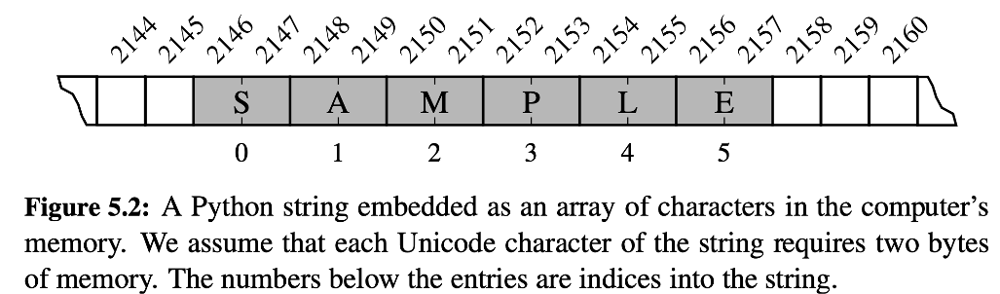


<br>

- "SAMPLE" es un string que cupa 12 bytes
	- En Python, los caracteres son representados en Unicode
		- Cada carácter Unicode suele usar \~16 bits (\~2 bytes)
</div></script></section><section  data-markdown><script type="text/template"><!-- .slide: class="has-light-background drop" data-background-color="#f8f8f8" -->
<div class="" style="position: absolute; left: 0px; top: 0px; height: 700px; width: 960px; min-height: 700px; display: flex; flex-direction: column; align-items: center; justify-content: center" absolute="true">

### Arreglos - Representación en memoria de un string (1/3)


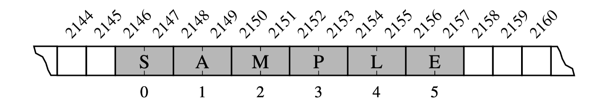


- "SAMPLE" ocupa ~12 bytes (cada carácter Unicode usa ~2 bytes)
- Cada posición en el arreglo es una celda
	 - Indexada (0, 1, 2, … 5)
- Ej: 
	- Celda con índice `4` contiene a `'L'`
		- Almacenada en los bytes `2154` y `2155`
</div></script></section><section  data-markdown><script type="text/template"><!-- .slide: class="has-light-background drop" data-background-color="#f8f8f8" -->
<div class="" style="position: absolute; left: 0px; top: 0px; height: 700px; width: 960px; min-height: 700px; display: flex; flex-direction: column; align-items: center; justify-content: center" absolute="true">

### Arreglos - Representación en memoria de un string (2/3)


- Como todas las celdas del arreglo usan la misma cantidad de bytes
	- Se puede acceder a cualquier celda del array 
		- En **tiempo constante** según su índice
</div></script></section><section  data-markdown><script type="text/template"><!-- .slide: class="has-light-background drop" data-background-color="#f8f8f8" -->
<div class="" style="position: absolute; left: 0px; top: 0px; height: 700px; width: 960px; min-height: 700px; display: flex; flex-direction: column; align-items: center; justify-content: center" absolute="true">

### Arreglos - Representación en memoria de un string (3/2)


- Con la dirección de inicio, el tamaño de cada celda y el índice deseado
	- Se calcula la dirección de memoria usando la fórmula: 
```plaintext
inicio + tamanio_celda * indice
```

- Ej:
	- La celda `4` comienza en la dirección `2154`:
```plaintext
 2146 + 2 * 4 = 2154
```
</div></script></section><section  data-markdown><script type="text/template"><!-- .slide: class="has-light-background drop" data-background-color="#f8f8f8" -->
<div class="" style="position: absolute; left: 0px; top: 0px; height: 700px; width: 960px; min-height: 700px; display: flex; flex-direction: column; align-items: center; justify-content: center" absolute="true">

### Random Access Memory (RAM)​

- A pesar de la naturaleza consecutiva de la memoria
	- Existe acceso eficiente a cualquier byte de memoria por dirección
	- Un byte puede ser almacenado o recuperado
		- En complejidad constante O(1)
</div></script></section><section  data-markdown><script type="text/template"><!-- .slide: class="has-light-background drop" data-background-color="#f8f8f8" -->
<div class="" style="position: absolute; left: 0px; top: 0px; height: 700px; width: 960px; min-height: 700px; display: flex; flex-direction: column; align-items: center; justify-content: center" absolute="true">

### Hay dos tipos principales de arreglos: Compactos y Referenciales
</div></script></section><section  data-markdown><script type="text/template"><!-- .slide: class="has-light-background drop" data-background-color="#f8f8f8" -->
<div class="" style="position: absolute; left: 0px; top: 0px; height: 700px; width: 960px; min-height: 700px; display: flex; flex-direction: column; align-items: center; justify-content: center" absolute="true">

### Arreglo compacto

- Aalmacena directamente bytes en forma contigua
- Ej: Un string


</div></script></section><section  data-markdown><script type="text/template"><!-- .slide: class="has-light-background drop" data-background-color="#f8f8f8" -->
<div class="" style="position: absolute; left: 0px; top: 0px; height: 700px; width: 960px; min-height: 700px; display: flex; flex-direction: column; align-items: center; justify-content: center" absolute="true">

### ¿Cómo representar en memoria una lista/tupla?


- Python debe garantizar que todas las celdas de un arreglo 
	- Tengan el mismo tamaño
	- Sin embargo, los elementos pueden ser strings de cualquier tamaño
		- Reservar espacio suficiente para el string más amplio
			- Sería muy ineficiente
</div></script></section><section  data-markdown><script type="text/template"><!-- .slide: class="has-light-background drop" data-background-color="#f8f8f8" -->
<div class="" style="position: absolute; left: 0px; top: 0px; height: 700px; width: 960px; min-height: 700px; display: flex; flex-direction: column; align-items: center; justify-content: center" absolute="true">

### Arreglo referencial

- Python usa un arreglo de referencias a objetos
	- Para representar listas o tuplas
- Se almacenan las direcciones de memoria
		- De los elementos de la secuencia

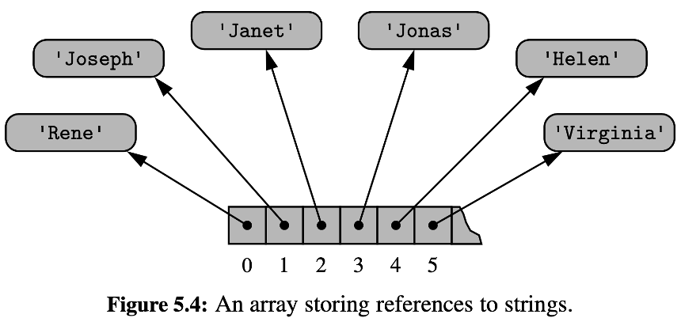
</div></script></section><section  data-markdown><script type="text/template"><!-- .slide: class="has-light-background drop" data-background-color="#f8f8f8" -->
<div class="" style="position: absolute; left: 0px; top: 0px; height: 700px; width: 960px; min-height: 700px; display: flex; flex-direction: column; align-items: center; justify-content: center" absolute="true">

### Arreglo referencial - Rendimiento


<br>

- Elementos individuales pueden tener diferentes tamaños
	- Pero Python utiliza una dirección de memoria de tamaño fijo
		- Ej: 64 bits por elemento
			- Permite acceso constante a elementos por índice
</div></script></section><section  data-markdown><script type="text/template"><!-- .slide: class="has-light-background drop" data-background-color="#f8f8f8" -->
<div class="" style="position: absolute; left: 0px; top: 0px; height: 700px; width: 960px; min-height: 700px; display: flex; flex-direction: column; align-items: center; justify-content: center" absolute="true">

### Estudiemos la utilidad de usar arreglos referenciales
</div></script></section><section  data-markdown><script type="text/template"><!-- .slide: class="has-light-background drop" data-background-color="#f8f8f8" -->
<div class="" style="position: absolute; left: 0px; top: 0px; height: 700px; width: 960px; min-height: 700px; display: flex; flex-direction: column; align-items: center; justify-content: center" absolute="true">

### Referencias a inmutables - Copia de listas (1/2)

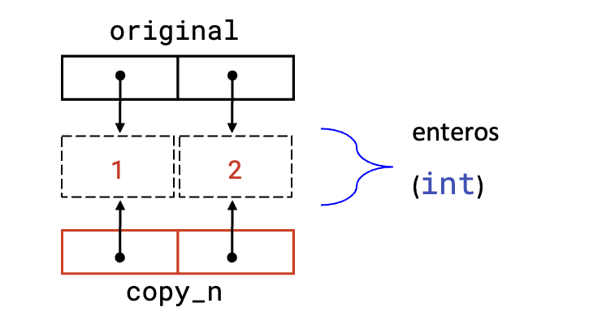


```python
import copy
original = [1, 2]
copy_1 = original[:] # copy_1 = [1, 2]
copy_2 = original.copy() # copy_2 = [1, 2]
copy_3 = copy.copy(original) # copy_3 = [1, 2]
```
</div></script></section><section  data-markdown><script type="text/template"><!-- .slide: class="has-light-background drop" data-background-color="#f8f8f8" -->
<div class="" style="position: absolute; left: 0px; top: 0px; height: 700px; width: 960px; min-height: 700px; display: flex; flex-direction: column; align-items: center; justify-content: center" absolute="true">

### Referencias a inmutables - Copia de listas (2/2)


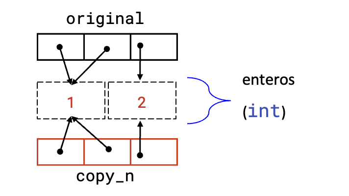


- Una lista puede tener múltiples referencias al mismo objeto
- Un objeto puede ser parte de dos o más listas
	- Las listas solo almacenan referencias a objetos
</div></script></section><section  data-markdown><script type="text/template"><!-- .slide: class="has-light-background drop" data-background-color="#f8f8f8" -->
<div class="" style="position: absolute; left: 0px; top: 0px; height: 700px; width: 960px; min-height: 700px; display: flex; flex-direction: column; align-items: center; justify-content: center" absolute="true">

### ¿Qué tan útil es usar arreglos de referencias para operaciones comunes con listas?
</div></script></section><section  data-markdown><script type="text/template"><!-- .slide: class="has-light-background drop" data-background-color="#f8f8f8" -->
<div class="" style="position: absolute; left: 0px; top: 0px; height: 700px; width: 960px; min-height: 700px; display: flex; flex-direction: column; align-items: center; justify-content: center" absolute="true">

### Referencias a inmutables - List slicing (1/2)


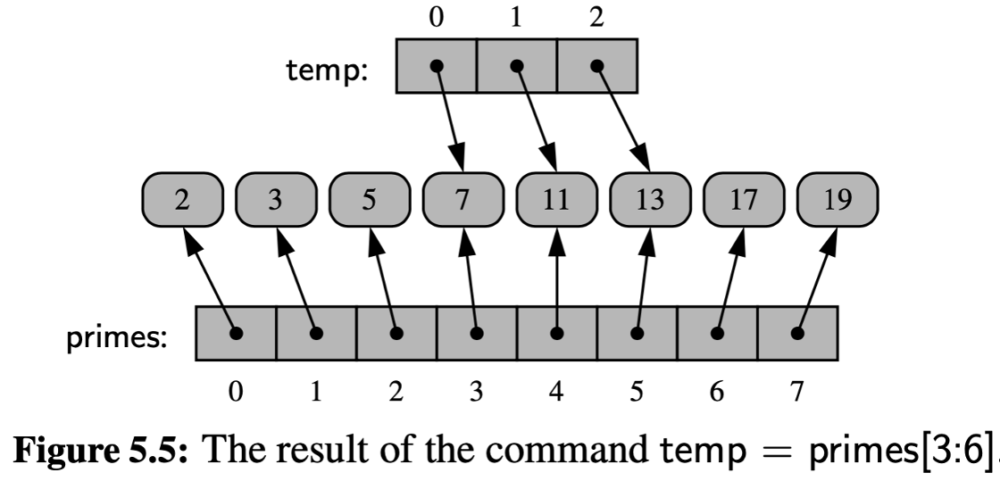


- List slicing de una lista con objetos inmutables  (Ej: `int`, `float`, `string`, `bool`)
	- Genera una nueva lista 
		- Que solo comparte referencias a esos objetos inmutables
</div></script></section><section  data-markdown><script type="text/template"><!-- .slide: class="has-light-background drop" data-background-color="#f8f8f8" -->
<div class="" style="position: absolute; left: 0px; top: 0px; height: 700px; width: 960px; min-height: 700px; display: flex; flex-direction: column; align-items: center; justify-content: center" absolute="true">

### Referencias a Inmutables - List slicing (2/2)

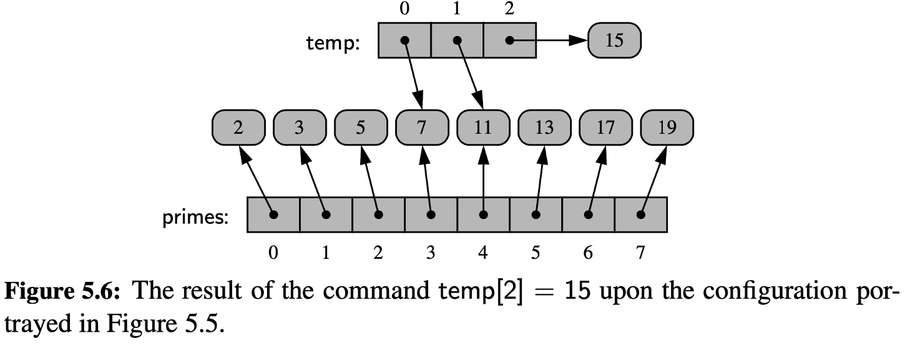


<br>

- Compartir referencias a un inmutable facilita la manipulación de listas
	- Un cambio a la lista 
		- Solo modifica referencias, no objetos
</div></script></section><section  data-markdown><script type="text/template"><!-- .slide: class="has-light-background drop" data-background-color="#f8f8f8" -->
<div class="" style="position: absolute; left: 0px; top: 0px; height: 700px; width: 960px; min-height: 700px; display: flex; flex-direction: column; align-items: center; justify-content: center" absolute="true">

### Referencias a inmutables - Creación de lista por replicación


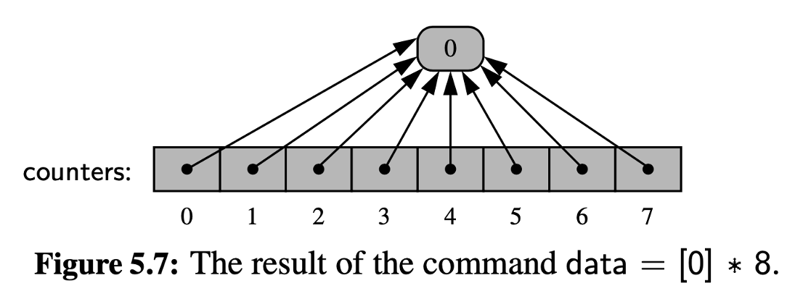


- Todas las celdas referencian al mismo objeto inmutable
	- Ej: 8 celdas referencian al entero `0`
</div></script></section><section  data-markdown><script type="text/template"><!-- .slide: class="has-light-background drop" data-background-color="#f8f8f8" -->
<div class="" style="position: absolute; left: 0px; top: 0px; height: 700px; width: 960px; min-height: 700px; display: flex; flex-direction: column; align-items: center; justify-content: center" absolute="true">

### Referencias a inmutables - Creación de lista por replicación

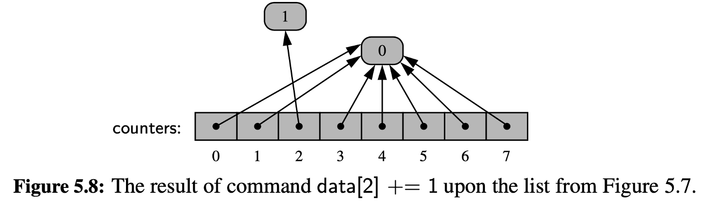


- Compartir referencias a un inmutable
	- Es sencillo, pues un cambio en una lista 
		- Solo será un cambio de referencia
</div></script></section><section  data-markdown><script type="text/template"><!-- .slide: class="has-light-background drop" data-background-color="#f8f8f8" -->
<div class="" style="position: absolute; left: 0px; top: 0px; height: 700px; width: 960px; min-height: 700px; display: flex; flex-direction: column; align-items: center; justify-content: center" absolute="true">

### Referencias a inmutables - Extensión de listas

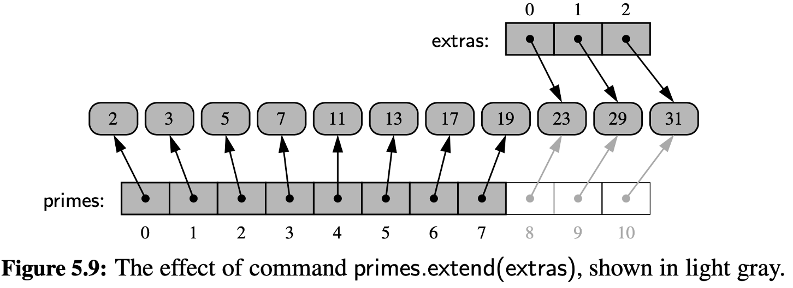


- Extender usando una lista de inmutables (Ej:  `extras`)
	- Es crear nuevas referencias a esos inmutables 
		- Desde la lista actual (Ej:  `primes`)
</div></script></section><section  data-markdown><script type="text/template"><!-- .slide: class="has-light-background drop" data-background-color="#f8f8f8" -->
<div class="" style="position: absolute; left: 0px; top: 0px; height: 700px; width: 960px; min-height: 700px; display: flex; flex-direction: column; align-items: center; justify-content: center" absolute="true">

### Arreglos en memoria

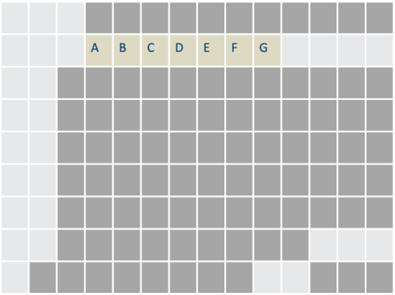


- Las letras representan el espacio contiguo
	- Ocupado por el arreglo
</div></script></section><section  data-markdown><script type="text/template"><!-- .slide: class="has-light-background drop" data-background-color="#f8f8f8" -->
<div class="" style="position: absolute; left: 0px; top: 0px; height: 700px; width: 960px; min-height: 700px; display: flex; flex-direction: column; align-items: center; justify-content: center" absolute="true">

### Arreglos Referenciales vs. Arreglos Compactos

- **Arreglos compactos**:
	- Almacenan datos primarios de forma contigua
		- Esto mejora el rendimiento 

	<br>

- **Arreglos referenciales**:
	- Almacenan direcciones de memoria
		-  Requieren almacenamiento adicional para direcciones
</div></script></section><section  data-markdown><script type="text/template"><!-- .slide: class="has-light-background drop" data-background-color="#f8f8f8" -->
<div class="" style="position: absolute; left: 0px; top: 0px; height: 700px; width: 960px; min-height: 700px; display: flex; flex-direction: column; align-items: center; justify-content: center" absolute="true">

### Complejidad temporal de los arreglos
</div></script></section><section  data-markdown><script type="text/template"><!-- .slide: class="has-light-background drop" data-background-color="#f8f8f8" -->
<div class="" style="position: absolute; left: 0px; top: 0px; height: 700px; width: 960px; min-height: 700px; display: flex; flex-direction: column; align-items: center; justify-content: center" absolute="true">

### Acceso en arreglos


<br> 

```plaintext
direccion_de_memoria =  inicio + tamanio_celda * indice
```

- Acceso directo por dirección de memoria
	- Cuyo cálculo es una operación constante
		- Complejidad:
			- &shy;<!-- .element: class="fragment" data-fragment-index="1" -->**O(1)**
</div></script></section><section  data-markdown><script type="text/template"><!-- .slide: class="has-light-background drop" data-background-color="#f8f8f8" -->
<div class="" style="position: absolute; left: 0px; top: 0px; height: 700px; width: 960px; min-height: 700px; display: flex; flex-direction: column; align-items: center; justify-content: center" absolute="true">

### Inserción al inicio/interna en arreglos

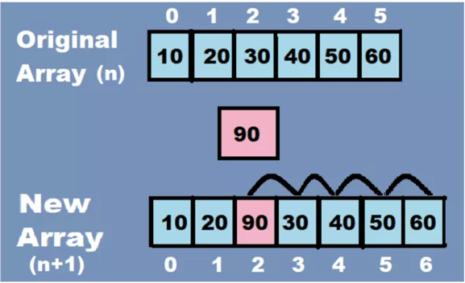


- La inserción al inicio/interna es costosa en arreglos
	- Se requiere desplazamiento de elementos
		- Costos aumentan con el tamaño del arreglo
			- Complejidad:
				- &shy;<!-- .element: class="fragment" data-fragment-index="1" -->**O(n)**
</div></script></section><section  data-markdown><script type="text/template"><!-- .slide: class="has-light-background drop" data-background-color="#f8f8f8" -->
<div class="" style="position: absolute; left: 0px; top: 0px; height: 700px; width: 960px; min-height: 700px; display: flex; flex-direction: column; align-items: center; justify-content: center" absolute="true">

### Eliminación al inicio/interna en arreglos

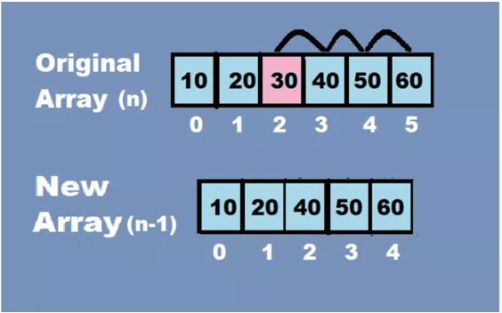


- La eliminación al inicio/interna es costosa en arreglos
	- Se requiere desplazamiento de elementos
		- Costos aumentan con el tamaño del arreglo
			- Complejidad:
				- &shy;<!-- .element: class="fragment" data-fragment-index="1" -->**O(n)**
</div></script></section><section  data-markdown><script type="text/template"><!-- .slide: class="has-light-background drop" data-background-color="#f8f8f8" -->
<div class="" style="position: absolute; left: 0px; top: 0px; height: 700px; width: 960px; min-height: 700px; display: flex; flex-direction: column; align-items: center; justify-content: center" absolute="true">

### Inserción al final en arreglos


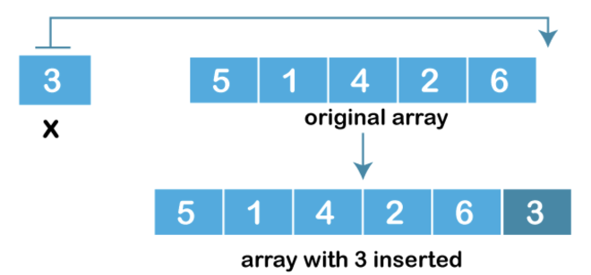


- Inserción al final no es costosa en arreglos
	- No requiere desplazamiento
	- Costo independiente del tamaño del arreglo
		- Complejidad:
			- &shy;<!-- .element: class="fragment" data-fragment-index="1" -->**O(1)**
</div></script></section><section  data-markdown><script type="text/template"><!-- .slide: class="has-light-background drop" data-background-color="#f8f8f8" -->
<div class="" style="position: absolute; left: 0px; top: 0px; height: 700px; width: 960px; min-height: 700px; display: flex; flex-direction: column; align-items: center; justify-content: center" absolute="true">

### Dimensionamiento de secuencias en Python


- Las secuencias en Python tienen un tamaño fjio al crearse

- Inmutables: 
	- `tuple` y `str`:  No pueden cambiar su tamaño ni contenido
- Mutables: 
	- `list`:  Permite agregar y eliminar elementos
	- Funcionamiento:
	    - Se usa un **arreglo subyacente** 
		    - Con más capacidad que la cantidad actual de elementos
		    - Si se llena, se crea un nuevo arreglo más grande
			    - Típicamente el doble de capacidad
</div></script></section><section  data-markdown><script type="text/template"><!-- .slide: class="has-light-background drop" data-background-color="#f8f8f8" -->
<div class="" style="position: absolute; left: 0px; top: 0px; height: 700px; width: 960px; min-height: 700px; display: flex; flex-direction: column; align-items: center; justify-content: center" absolute="true">

### Amortización

- Considera el costo promedio a largo plazo

- Por ejemplo, en la inserción al final de un arreglo:


- Caso frecuente: 
	- Si hay espacio es **O(1)**
- Caso infrecuente: 
	- Si no hay espacio, se redimensiona y copia el arreglo
		- **O(n)**
- Suposición: Como la redimensión y copiado son infrecuentes
	- El costo **amortizado** se puede asumir como **O(1)**
</div></script></section><section  data-markdown><script type="text/template"><!-- .slide: class="has-light-background drop" data-background-color="#f8f8f8" -->
<div class="" style="position: absolute; left: 0px; top: 0px; height: 700px; width: 960px; min-height: 700px; display: flex; flex-direction: column; align-items: center; justify-content: center" absolute="true">

### Eliminación al final en arreglos

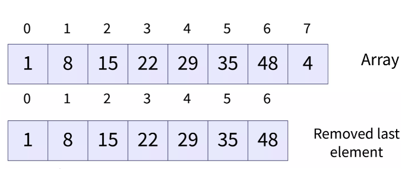


 - Eliminación al final no es costosa en arreglos
	 - No requiere desplazamiento
	 - Costo independiente del tamaño del arreglo
		 - Complejidad:
			- &shy;<!-- .element: class="fragment" data-fragment-index="1" -->**O(1)**
</div></script></section><section  data-markdown><script type="text/template"><!-- .slide: class="has-light-background drop" data-background-color="#f8f8f8" -->
<div class="" style="position: absolute; left: 0px; top: 0px; height: 700px; width: 960px; min-height: 700px; display: flex; flex-direction: column; align-items: center; justify-content: center" absolute="true">

### Ventajas

- Implementación sencilla
    
- Eficiencia en acceso: 
	- O(1)
    
- Inserción/eliminación al final eficientes: 
	- O(1)
</div></script></section><section  data-markdown><script type="text/template"><!-- .slide: class="has-light-background drop" data-background-color="#f8f8f8" -->
<div class="" style="position: absolute; left: 0px; top: 0px; height: 700px; width: 960px; min-height: 700px; display: flex; flex-direction: column; align-items: center; justify-content: center" absolute="true">

### Desventajas

- Tamaño fijo 
	- Si se llena, requiere redimensionamiento y copiado costosos: 
		- O(n)

- Inserción/eliminación al inicio/interna costosa: 
	- O(n)
</div></script></section><section  data-markdown><script type="text/template"><!-- .slide: class="has-light-background drop" data-background-color="#f8f8f8" -->
<div class="" style="position: absolute; left: 0px; top: 0px; height: 700px; width: 960px; min-height: 700px; display: flex; flex-direction: column; align-items: center; justify-content: center" absolute="true">

### Array List – Complejidad temporal

- En resumen:
<html lang="es"> <head> <meta charset="UTF-8"> <meta name="viewport" content="width=device-width, initial-scale=1.0"> <title>Tabla de Estructuras de Datos</title> <style> table { width: 100%; border-collapse: collapse; } th { border: 2px solid black; padding: 10px; text-align: center; background-color: #D7ECFC; /* Fondo azul claro para encabezados */ font-weight: bold; font-size: 18px; } td { border-left: 2px solid black; border-right: 2px solid black; border-top: 2px solid black; padding: 10px; text-align: center; background-color: white; /* Fondo blanco para la segunda fila */ } tr:last-child td { border-bottom: 2px solid black; /* Línea negra en la última fila */ } </style> </head> <body> <table> <tr> <th>Estructura de datos</th> <th>Acceso</th> <th>Inserción al inicio</th> <th>Eliminación al inicio</th> <th>Inserción al final</th> <th>Eliminación al final</th> <th>Inserción/Eliminación interna</th> </tr> <tr> <td>Array List</td> <td>O(1)</td> <td>O(n)</td> <td>O(n)</td> <td>O(1)*</td> <td>O(1)*</td> <td>O(n)</td> </tr> </table> </body> </html>

 \* **Costo amortizado**

<br>

- ¿Por qué aplica la amortización a la eliminación al final?
	- &shy;<!-- .element: class="fragment" data-fragment-index="1" -->Redimensionamiento para decrecer (por eficiencia)
</div></script></section><section  data-markdown><script type="text/template"><!-- .slide: class="has-light-background drop" data-background-color="#f8f8f8" -->
<div class="" style="position: absolute; left: 0px; top: 0px; height: 700px; width: 960px; min-height: 700px; display: flex; flex-direction: column; align-items: center; justify-content: center" absolute="true">

### Entendamos a una lista como una estructura recursiva​
</div></script></section><section  data-markdown><script type="text/template"><!-- .slide: class="has-light-background drop" data-background-color="#f8f8f8" -->
<div class="" style="position: absolute; left: 0px; top: 0px; height: 700px; width: 960px; min-height: 700px; display: flex; flex-direction: column; align-items: center; justify-content: center" absolute="true">

### Lista como una estructura recursiva

- Definición recursiva de una lista:
- Una lista se define naturalmente de forma recursiva
	- Como una lista vacía
		- Y la concatenación de un elemento con una lista (vácia o poblada) 
```python
[]  # Es una lista
[e|list]  # Es una lista
```


- Donde:
	- `e` es un elemento cualquiera y
	- `list` es una lista
</div></script></section><section  data-markdown><script type="text/template"><!-- .slide: class="has-light-background drop" data-background-color="#f8f8f8" -->
<div class="" style="position: absolute; left: 0px; top: 0px; height: 700px; width: 960px; min-height: 700px; display: flex; flex-direction: column; align-items: center; justify-content: center" absolute="true">

### List – API


- **TODO:**
	- Revisar la [documentación de listas](https://isis1225devs.github.io/ISIS1225-Structure-Documentation/DataStructures.List.html)
		- En particular de [Array List](https://isis1225devs.github.io/ISIS1225-Structure-Documentation/DataStructures.List.html#module-DataStructures.List.array_list)
</div></script></section><section  data-markdown><script type="text/template"><!-- .slide: class="has-light-background drop" data-background-color="#f8f8f8" -->
<div class="" style="position: absolute; left: 0px; top: 0px; height: 700px; width: 960px; min-height: 700px; display: flex; flex-direction: column; align-items: center; justify-content: center" absolute="true">

<i class="fas fa-question-circle fa-2x fa-spin fa-4x"></i>


<br>
<br>


[<i class="fas fa-home  fa-3x"></i>](https://eerosales24.github.io/eda_2025_20/#)
</div></script></section></div>
    </div>

    <script src="dist/reveal.js"></script>

    <script src="plugin/markdown/markdown.js"></script>
    <script src="plugin/highlight/highlight.js"></script>
    <script src="plugin/zoom/zoom.js"></script>
    <script src="plugin/notes/notes.js"></script>
    <script src="plugin/math/math.js"></script>
	<script src="plugin/mermaid/mermaid.js"></script>
	<script src="plugin/chart/chart.min.js"></script>
	<script src="plugin/chart/plugin.js"></script>
	<script src="plugin/customcontrols/plugin.js"></script>

    <script>
      function extend() {
        var target = {};
        for (var i = 0; i < arguments.length; i++) {
          var source = arguments[i];
          for (var key in source) {
            if (source.hasOwnProperty(key)) {
              target[key] = source[key];
            }
          }
        }
        return target;
      }

	  function isLight(color) {
		let hex = color.replace('#', '');

		// convert #fff => #ffffff
		if(hex.length == 3){
			hex = `${hex[0]}${hex[0]}${hex[1]}${hex[1]}${hex[2]}${hex[2]}`;
		}

		const c_r = parseInt(hex.substr(0, 2), 16);
		const c_g = parseInt(hex.substr(2, 2), 16);
		const c_b = parseInt(hex.substr(4, 2), 16);
		const brightness = ((c_r * 299) + (c_g * 587) + (c_b * 114)) / 1000;
		return brightness > 155;
	}

	var bgColor = getComputedStyle(document.documentElement).getPropertyValue('--r-background-color').trim();
	var isLight = isLight(bgColor);

	if(isLight){
		document.body.classList.add('has-light-background');
	} else {
		document.body.classList.add('has-dark-background');
	}

      // default options to init reveal.js
      var defaultOptions = {
        controls: true,
        progress: true,
        history: true,
        center: true,
        transition: 'default', // none/fade/slide/convex/concave/zoom
        plugins: [
          RevealMarkdown,
          RevealHighlight,
          RevealZoom,
          RevealNotes,
          RevealMath.MathJax3,
		  RevealMermaid,
		  RevealChart,
		  RevealCustomControls,
        ],


    	allottedTime: 120 * 1000,

		mathjax3: {
			mathjax: 'plugin/math/mathjax/tex-mml-chtml.js',
		},
		markdown: {
		  gfm: true,
		  mangle: true,
		  pedantic: false,
		  smartLists: false,
		  smartypants: false,
		},

		mermaid: {
			theme: isLight ? 'default' : 'dark',
		},

		customcontrols: {
			controls: [
			]
		},
      };

      // options from URL query string
      var queryOptions = Reveal().getQueryHash() || {};

      var options = extend(defaultOptions, {"width":960,"height":700,"margin":"0.025","minScale":"0.1","maxScale":"2.0","controls":"true","controlsLayout":"bottom-right","progress":"true","slideNumber":"true","center":"false","transition":"slide","transitionSpeed":"default"}, queryOptions);
    </script>

    <script>
      Reveal.initialize(options);
    </script>
  </body>

  <!-- created with Advanced Slides -->
</html>
